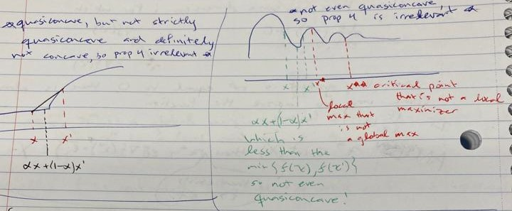
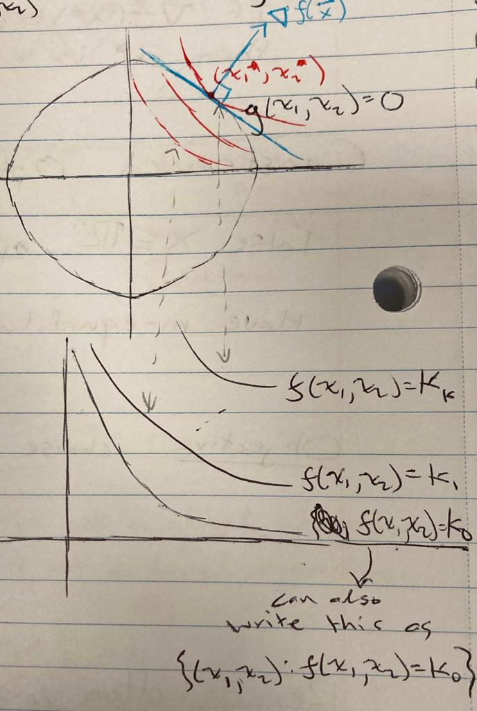
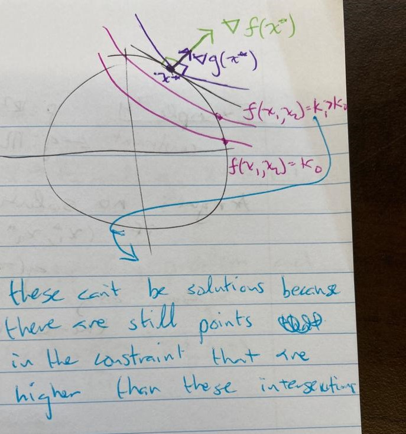
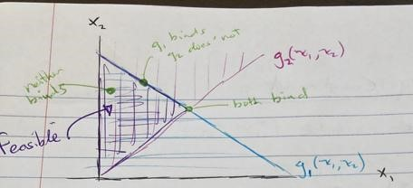
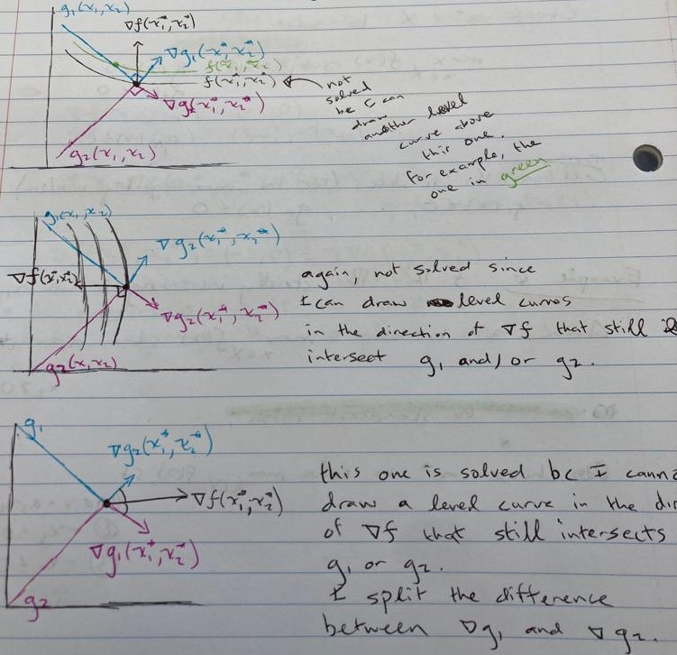
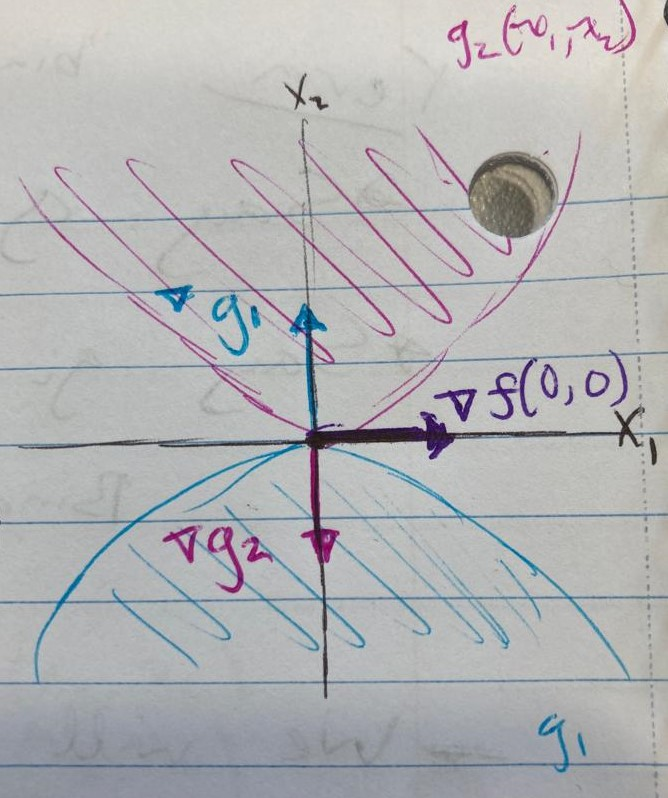

13 Constrained Optimization
13.0.1 Intro Constrained Optimization
Fix \(X \subseteq \mathbb{R}^n, f: X \rightarrow \mathbb{R}\). Want to choose \(x \in X\) to maximize \(f\) subject to a constraint, \(C \subseteq X\).
- special case 1: \(C=X\) unconstrained optimization
- special case 2:
- Equality constraints: \(g(X) = 0\)
- Inequality constraints: \(g(X) \leq 0\)
Objective: choose \(x \in X\) to solve \(\max_{x\in C} f(X)\)
Call \(x\in X\) a solution to the maximization problem if \(x\in C\) and \(f(x) \geq f(y), \forall y \in C\).
\(x\) is a maximizer of \(f\) on \(C\)
\(f\) attains a maximum on \(C\)
Example 1 \(f: \mathbb{R} \rightarrow \mathbb{R}\) such that \(f(x) = x^2\)
Then
- \(argmax_{[-1,1]}f(x) = \{-1,1\}\)
- \(argmax_{\mathbb{R}}f(x) = \emptyset\)
- \(argmax_{(-1,1)}f(x) = \emptyset\)
13.0.2 Prop 1 “cont and compact \(\Rightarrow\) argmax non-empty and compact”
If \(f: X \rightarrow \mathbb{R}\) is continuous and \(C\) is compact, then \(argmax_{x\in C} f(x)\) is nonempty and compact.
The only new part of this proposition is adding the fact that \(C\) is compact.
Recall from Heine-borel: a set (\(argmax_{x\in C} f(X)\)) is compact \(\iff\) it is closed and bounded.
- Closed tells us: all sequences in the set converge to a limit within the set. Fix \((x_n: n \geq 1)\) with each \(x_n \in argmax_{x \in C} f(x) \Rightarrow \forall n: f(x_n)=f(x_{n+1})\). I.e., \(f(x_1) = \gamma = f(x_2)\). So we have a sequence, \((f(x_n): n \geq 1) = (f(x_1), ..., f(x_1))\) which converges to \(f(x_1)\).
- Bounded tells us: \(argmax_{x\in C} f(X) \subseteq C\)
Since \(f\) is continuous, if \(x^* = \lim_{n\rightarrow \infty} x_n\) then \(x^* \in C\) (since \(C\) is closed). So \(f(x^*) = f(x_1)\), so \(x^*\in argmax_C f(x)\).
13.0.3 Prop 2 “convex and strictly quasiconcave \(\Rightarrow\) argmax has max one element”
If \(X,C \subseteq \mathbb{R}^n\) are convex and \(f\)
13.1 Unconstrained Optimization
13.1.1 Def “local maximizer”
Call \(x^* \in C\) a local maximizer of \(f\) on \(C\) if there exists some \(\varepsilon>0\) such that for each \(x\in C\) with \(d^{euc}(x,x^*)<\varepsilon, f(x^*) \geq f(x)\).
Call \(x^*\) a local maximizer of \(f\) if it is a local maximizer of \(f\) on \(X\).
If \(x^*\) is a global maximizer of \(f\) (i.e., \(x^* \in argmax_X f(x)\)), then \(x^*\) is a local maximizer of \(f\).
Recall: \(f\) is continuously differentiable \(\Rightarrow\) derivative exists and is continuous.
13.1.2 Prop 3 “local max \(\Rightarrow \nabla f(x^*) = \vec{0}\)”
Let \(f\) be differentiable. If \(x^* \in int(X)\) is a local maximizer of \(f\) then \(\nabla f(x^*) = \vec{0}\)
Suppose \(\nabla f(x^*) \neq (0, 0, ..., 0)\). Then there is some dimension \(i\) for which \(\frac{df}{dx_i}(x^*) \neq 0\).
when the gradient is not equal to 0, there is always some way to move that will improve the function
If \(\nabla f(x^*) \neq \vec{0}\) and \(x^* \in int(X)\) then there exists \(\varepsilon > 0\) such that \(x^* + \varepsilon (\nabla f(x^*) \cdot \vec{e_i}) \in X\) and \(f(x^* + \varepsilon(\nabla f(x^*)) > f(x^*)\).
Example 2 \(f: [-1,1] \rightarrow \mathbb{R}\) such that \(f(x) = x^2\).
Local/global maximizers: \(\{-1,1\}\)
- \(\nabla f(x) = (2x)\)
- \(\nabla f(-1) = (-2) \neq \vec{0}\)
- \(\nabla f(1) = (2) \neq \vec{0}\)
How can this be? Because \(\{-1,1\} \cap int([-1,1]) = \emptyset\).
13.1.3 Prop 4 “concave/quasiconcave \(\Rightarrow\) local = global and critical point”
Let \(X \subseteq \mathbb{R}^n\) be convex and \(f: X \rightarrow \mathbb{R}\) be either concave or strictly quasiconcave.
- \(x^*\) is a local maximizer of \(f\) if and only if \(x^*\) is a global maximizer of \(f\).
- If \(f\) is differentiable and \(x^* \in int(X)\), then \(x^*\) is a local maximizer if and only if it is a critical point of \(f\).

Proof proving the contrapositive of (1): if \(x^*\) is not a global maximizer then it is not a local maximizer.
If \(x^*\) is not a global maximizer then there exists \(\hat{x}\) such that \(f(x^*) < f(\hat{x})\).
For \(\alpha \in (0,1)\) define \(x(\alpha) = \alpha \hat{x} + (1-\alpha)x^*\).
Recall:
- strict quasiconcavity says \(f(x(\alpha)) > f(x^*)\)
- concavity says \(f(x(\alpha)) \geq \alpha f(\hat{x}) + (1-\alpha)f(x^*)\)
But \(f(x(\alpha))> f(x^*)\) so \(x^*\) is not a local maximizer. \(\square\)
13.1.4 Prop 5 “local maximizers, gradient, convexity, and openness”
Let \(f: X \rightarrow \mathbb{R}\) be continuously differentiable and \(x^* \in int(X)\).
- Let \(X \subseteq \mathbb{R}^n\) be convex. If \(x^*\) is a local maximizer of \(f\) then \(\nabla f (x^*) = \vec{0}\) and \(H_f(x^*)\) is negative semidefinite
- Let \(X \subseteq \mathbb{R}^n\) be open. If \(\nabla f (x^*) = \vec{0}\) and \(H_f(x^*)\) is negative definite then \(x^*\) is a local maximizer of \(f\).
13.2 Constrained Optimization with Equality Constraints
Take \(X \subseteq \mathbb{R}^n\) open, and \(f: X \rightarrow \mathbb{R}\). Have \(m\) equality constraints: \[g_i: X \rightarrow \mathbb{R}, \text{ for } i = 1, ..., m\]
13.2.0.1 Remark “standard form”
often, constraints take the form \(\hat{g}_i(x) = b_i\) for \(i = 1,..., m\). If so, define \(g_i(x) = \hat{g}_i(x) - b_i\) and then require \(g_i(x) = 0\). Call this rewriting the program in standard form
13.2.0.2 Remark “feasible”
the constraint set, \(C = \{x: g_1(x) = g_2(x) = ... = g_m(x) = 0\}\). If \(x \in C\), we say \(x\) is feasible
Example 3 \(f: \mathbb{R}^2 \rightarrow \mathbb{R}\) such that each \(f(x_1,;): \mathbb{R} \rightarrow \mathbb{R}\) and \(f(;, x_2): \mathbb{R} \rightarrow \mathbb{R}\) are strictly increasing. Objective is sot maximize \(f\) subject to \(x_1^2 + x_2^2 = 2\).
- \(m=1\): \(g(x_1, x_2) = x_1^2 + x_2^2 - 2\)
Program: choose \(x^*\) to solve \(max_{(x_1,x_2)}f((x_1,x_2))\) such that \(g(x_1,x_2)=0.\)
Graphically:
\((x_1^*, x_2^*)\), the level curve of \(f(x_1^*, x_2^*)\), is tangent to the constraint.

Key: \(\nabla F(\vec{y})\) is orthogonal to the level curve that contains \(\vec{y}\).
gradient at \(\vec{y}\) points in the direction of steepest ascent from \(\vec{y}\)
13.2.0.3 begin class 2023-09-21
Example 3, continued in next class
We know \(\nabla f(x^*) = \lambda \nabla g(x^*)\) for some \(\lambda \neq 0\).

So we have
- \(\nabla f(\vec{x}) = (1,1)\)
- \(\nabla g(\vec{x}) = (2x_1,2x_2)\).
Which implies
- \(1 = \lambda(2x_1^*)\)
- \(1 = \lambda(2x_2^*)\)
- \((x_1^*)^2 + (x_1^*)^2 - 2 = 0\)
Combining (1) and (2): \[\lambda = \frac{1}{2x_1^*} = \frac{1}{2x_2^*} \Rightarrow x_1^* = x_2^*\] And (3) implies \[(x_1,x_2) \in \{(1,1), (-1,-1)\}\] Clearly \(f(1,1) > f(-1,-1)\) so only \((x_1^*, x_2^*)=(1,1)\) will solve the max-equality problem.
Example 4
- \(f: \mathbb{R}^2 \rightarrow \mathbb{R}\) with \(f(x_1,x_2) = x_1 + x_2\)
- \(g: \mathbb{R}^2 \rightarrow \mathbb{R}\) with \(g(x_1,x_2) = x_1\) (constraint)
No solution to the max-equality problem. Here’s why:
If \((x_1^*, x_2^*)\) is a solution to max-equality problem, then \(g(x_1^*, x_2^*) = x_1^* = 0\). So, any \((0, x_2)\) satisfies the constraint. (i.e., there is no \(x_2^* \in argmax_{x_2 \in \mathbb{R}} f(0,x_2)\) since I will always want more \(x_2\)).
Insert drawing here!
So, \(\forall \lambda \neq 0, \nabla f(\vec{x}) \neq \lambda \nabla g(\vec{x})\).
13.2.0.4 Term “Jacobian”
Jacobian matrix of \(g_1, ..., g_m\):
\[J(\vec{x}) = \begin{bmatrix} \frac{dg_1}{dx_1}(\vec{x}) .... \frac{dg_1}{dx_n}(\vec{x}) \\ . \\ . \\ . \\ \frac{dg_m}{dx_1}(\vec{x}) ... \frac{dg_m}{dx_n}(\vec{x}) \end{bmatrix}\]
- note, this is a \(m \times n\) matrix,
- \(i^{th}\) row is \(\nabla g_i(\vec{x})\)
- \(rank(J(\vec{x})) \leq \min\{m,n\}\)
Recall: rank = largest number of linearly independte rows (or columns) of the matrix
13.2.0.5 Term “constraint qualification for the max-equality problem”
\(rank(J(x^*)) = m\) is the constraint qualification for the max-equality problem
13.2.1 Prop 6 “theorem of Lagrange”
Let \(X \subset \mathbb{R}^n\) open and let \(f: X \rightarrow \mathbb{R}\) and \(g_i: X \rightarrow \mathbb{R}\) (for \(i = 1, ..., m\)) be continuously differentiable.
If \(x^*\) is a solution to the max-equality problem and if \(rank(J(x^*)) = m\), then there exists unique \[(\lambda_1^*, ..., \lambda_m^*), \text{ such that } \nabla f(x^*) = \sum^m_{i=1} \lambda_i^* \nabla g_i(x^*)\] We say the Lagrange condition holds at \(x^*\) if \[\nabla f(x^*) = \sum_{i =1}^m \lambda_i \nabla g_i(x^*)\] and we refer to these scalars \(\lambda_1, ... , \lambda_m\) as Lagrange Multipliers.
- reminder: \(x^*\) is technically a vector even though this notation doesn’t emphasize that.
Aside: Suppose \(m=1\). Then
- \(rank(J(\vec{x})) \leq 1\)
- if \(rank(J(\vec{x})) \neq 1\) then \(rank(J(\vec{x})) = 0\)
- \(rank(J(\vec{x})) = 0 \iff \nabla(\vec{x}) = \vec{0}\)
- so, to say rank of a matrix is 0 is to say none of its cols/rows are linearly independent (the only for this to happen is for the gradient to be 0)
Example 5
- \(f: \mathbb{R}^2 \rightarrow \mathbb{R}\) with \(f(x_1,x_2) = -x_1\)
- \(g: \mathbb{R}^2 \rightarrow \mathbb{R}\) with \(g(x_1,x_2) = x_1^3 - x_2^2\) (constraint)
At \((x_1^*, x_2^*)\) solution to max-equality: \[(x_1^*)^3 = (x_2^*)^2 \geq 0 \Rightarrow x_1^* \geq 0\] Maximizing \(x_1^*\) means picking the smallest value possible (0) since \(f = -x_1\). So, \(x_1^* = x_2^* = 0\). So,
- \(\nabla f(x_1,x_2) = (-1, 0)\)
- \(\nabla g(x_1,x_2) = (3x_1^2, -2x_2)\)
- \(\nabla g(x_1^*,x_2^*) = (0,0)\) so the constraint qualification fails!
So, since the constraint qualification failed, we have no idea whether \[\nabla f(x_1^*, x_2^*) = (-1,0) =^{?} \lambda \nabla g(x_1^*,x_2^*) = \lambda (0,0)\]
13.3 Inequality Constraints
Max-inequality problem
Choose \(x^* \in X\) to solve \(max_{x \in X} f(x)\) subject to \(g_1(x) \leq 0, g_2(x) \leq 0, ..., g_m(x) \leq 0\)
13.3.0.1 Term “feasible for the max-inequality problem”
Call \(x \in X\) feasible if \(g_1(x) \leq 0, ..., g_m(x) \leq 0\)
Example 6 \(f: \mathbb{R}^2 \rightarrow \mathbb{R}\) strictly increasing in both \(x_1, x_2\).
Choose \(x^*\) to solve \(max_{x \in X} f(x)\) such that
- \(a_1x_1 + a_2x_2 \leq b\)
- \(x_1 \geq 0\)
- \(x_2 \geq 0\)
Convert to standard form:
Choose \(x^*\) to solve \(max_{x \in X} f(x)\) such that
- \(a_1x_1 + a_2x_2 -b \leq 0\)
- \(-x_1 \leq 0\)
- \(-x_2 \leq 0\)

\(g_1(x_1,x_2) = 0\) means \(g_1\) binds at that \((x_1,x_2)\)

13.3.0.2 Term “binding/slack”
- Say \(g_i\) is binding at \(x^*\) if \(g_i(x^*)=0\)
- Say \(g_i\) is slack at \(x^*\) if \(g_i(x^*)<0\)
\[Bind(x^*) = \{i: g_i \text{ is binding at } x^*\}\]
We will end up with a result where \(\nabla f(x^*)\) is contained in \[\{\vec{x} \in \mathbb{R}^n: \forall i \in Bind(x^*), \exists \lambda_i \geq 0 \text{ such that } \vec{x} = \sum_{i \in Bind(x^*)}\nabla \lambda_i g_i(x^*)\}\] Example 7
- \(f: \mathbb{R}\rightarrow \mathbb{R}: f(x) = x\)
- \(g: \mathbb{R}\rightarrow \mathbb{R}: g(x) = x^3\)
Constraint: \(g(x) = x^3 \leq 0\). But for this to happen, need \(x\leq 0\). So, \(C = (-\infty, 0]\). So the solution fo the max-inequality problem is just \(x^*=0\). But, \[\nabla f(x) = (1), \nabla g(x) = (3x^2) \Rightarrow \nabla f(0) = 1 =^{?} \lambda 0 = \lambda \nabla g(0) \Rightarrow \text{ no such } \lambda \text{ exists!}\] This means: our constraint binds at \(x^*=0\) but we can’t find any \(\lambda\) such that \(\nabla f(x^*)\) is actually in the set \(\{\vec{x} \in \mathbb{R}^n: \forall i \in Bind(x^*), \exists \lambda_i \geq 0 \text{ such that } \vec{x} = \sum_{i \in Bind(x^*)}\nabla \lambda_i g_i(x^*)\}\)!
Example 8
- \(f: \mathbb{R}^2\rightarrow \mathbb{R}: f(x_1,x_2) = x_1\)
- \(g_1: \mathbb{R}^2\rightarrow \mathbb{R}: g(x_1,x_2) = x_1^2 + x_2\)
- \(g_2: \mathbb{R}^2\rightarrow \mathbb{R}: g(x_1,x_2) = x_1^2 - x_2\)
Only feasible point: \(\{(0,0)\}\) (see drawing).

So, \((x_1^*, x_2^*) = (0,0)\) is the solution to the max inequality problem.
Q. Is there a \(\lambda_1, \lambda_2 \geq 0\) such that \((1,0) = \lambda_1 (0,1) + \lambda_2(0,-1)\)
A. Obviously not since the \(x_1\) coordinate is stuck at 0 no matter the value of any \(\lambda\).
So the picture above looks like it should work, but it won’t!
13.3.1 Def “Mangasarian-Fromovitz”
The Mangasarian-Fromovitz Constraint Qualification Condition (MF) holds at \(x^*\) if there exists \(\vec{x} \in \mathbb{R}^n\) such that for each \(i \in Bind(x^*), \nabla g_i(x^*) \cdot \vec{x} < 0\).
Examples 7 and 8 fail Mangasarian-Fromovitz!
In 8, there was no \(\vec{x}\) with * \((0,1) \cdot \vec{x} < 0\) or * \((0,-1) \cdot \vec{x} < 0\)
In general, we’ll have a problem satisfying MF if \(i,j\) are binding at \(x^*\) with \[\nabla g_i(x^*) = - \nabla g_j(x^*)\]
13.3.2 Def “Slater condition”
Say the max inequality problem satisfies the Slater condition if there exists \(x \in X\) such that for each \(i = 1, ..., m, g_i(X) < 0\).
13.3.3 Prop 7 “Slater iff MF at each feasible”
Let \(X \subseteq \mathbb{R}^n\) be open, \(f\) continuously differentiable and for each \(i, g_i\) is convex and continuously differentiable. Then the Slater condition holds if and only if Mangasarian-Fromovitz holds at each feasible \(x^*\).
13.3.4 Prop 8 “Karush-Kun-Tucker Theorem”
Let \(X\subseteq \mathbb{R}^n\) be open, \(f: X \rightarrow \mathbb{R}\) and each \(g_i: X \rightarrow \mathbb{R}\) be continuously differentiable. Let \(x^*\) be a solution to the max-inequality problem. If MF holds at \(x^*\) then for each \(i = 1, ..., m\) there exists \(\lambda_i \geq 0\) such that
- \(\nabla f(x^*) = \sum_{i=1}^m \lambda_i \nabla g_i(x^*)\)
- if \(i \notin bind(x^*)\) then \(\lambda_i = 0\)
Either way, \(\lambda_i g_i(x^*) = 0\):
\(i \notin bind(x^*), \lambda_i = 0 \Rightarrow \lambda_i g_i(x^*) = 0\)
\(i \in bind(x^*), g_i(x^*) = 0 \Rightarrow \lambda_i g_i(x^*) = 0\)
13.3.4.1 Remark
Sometimes we will have a non-negativity constraint \(g_i(x_1, ..., x_m) = -x_i \leq 0\). If \(g_i\) binds at \(x^*\) then \(\lambda_i > 0\).
- some authors don’t include the non-negativity constraints into their optimization problem (even though they mean to)
- since those missing constraints have \(\lambda_i \nabla g_i (x_1^*, ..., x_m^*) = (0, ..., 0, -\lambda_i, 0, ..., 0) \leq (0, ..., 0)\) they rewrite KKT condition as \(\nabla f(x^*) \leq \sum_{i=1}^m \lambda_i \nabla g_i(x^*)\).
Example 9 Omitted - explains why nonnegativity are important.
13.3.5 Prop 9 “\(g\) quasiconvex, \(f\) quasiconcave \(\Rightarrow x^*\) solves max inequality”
Let \(X \subseteq \mathbb{R}^n\) be open and let \(f: X\rightarrow \mathbb{R}\) and \(g: X\rightarrow \mathbb{R}\) be continuously differentiable for \(i = 1, ..., m\). Let \(x^*\in X\) be feasible for the inequality problem and satisfy the KKT conditions.
If each constraint at which \(x^*\) binds is quasiconvex and either
- \(f\) is concave or
- \(f\) is quasiconcave and \(\nabla f(x^*) \neq \vec{0}\)
then \(x^*\) solves the max inequality problem.
- note: constraints are almost always convex, so that is nice.
Finding \(x^*\) and \(\lambda_1^*, ..., \lambda_m^*\):
- Define a lagrangean for inequality constraints: \[\mathcal{L}: X \times \mathbb{R}^m_+ \rightarrow \mathbb{R} \text{ such that } \mathcal{L}(x, \lambda_1, ..., \lambda_m) = f(x) - \sum_{i=1}^m \lambda_i g_i(x)\]
- if we choose \(x^*\) to maximize \(\mathcal{L}(\cdot, \lambda_1, ..., \lambda_m)\) then \(\frac{df}{dx^*_j}(x^*) = \sum_{i=1}^m \lambda_i \frac{dg_i}{dx}(x^*, \lambda_1, ..., \lambda_m)\) for each dimension \(j = 1, ..., n\).
Example 10 Omitted. Leads to saddle points.
13.3.6 Def “saddle point”
\((x^*, \lambda_1^*, ..., \lambda_m^*)\) is a saddle point of \(\mathcal{L}\) if \[\mathcal{L}(x^*, \lambda_1, ..., \lambda_m) \geq \mathcal{L}(x^*, \lambda_1^*, ..., \lambda_m^*) \geq \mathcal{L}(x, \lambda_1^*, ..., \lambda_m^*)\] for each \(x \in X\) and for each \((\lambda_1, ..., \lambda_m)\in \mathbb{R}^m_+\)
13.3.7 Prop 10 “saddle points are great”
Suppose \((x^*, \lambda_1^*, ..., \lambda_m^*)\) is a saddle point of the Lagrangian inequality. Then
- if \(\mathcal{L}\) is differentiable and \(x^*\) is feasible, then the KKT conditions hold at \(x^*\).
- \(x^*\) solves the max problem with inequality constraints.
Suppose \(x^*\) solves the max problem with inequality constraints and \(\mathcal{L}\) is the associated Lagrangian. Then, if \(f\) is concave and \(g_1, ..., g_m\) are convex and satisfy Slater condition, then there exists \((\lambda_1^*, ..., \lambda_m^*)\) such that \((x^*, \lambda_1^*, ..., \lambda_m^*)\) is a saddle point of \(\mathcal{L}\).